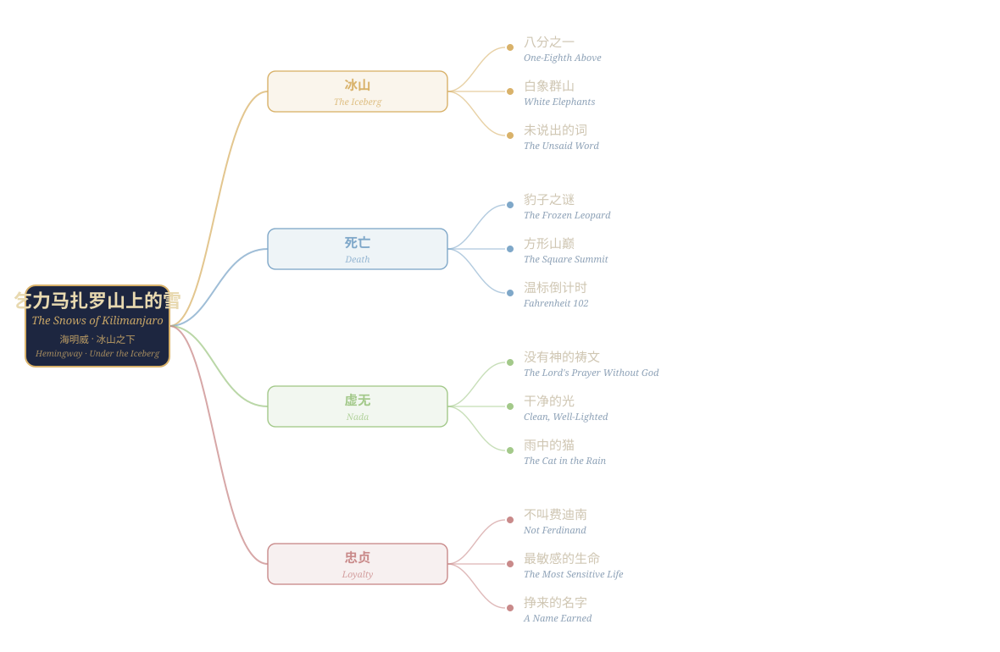

乞力马扎罗山上的雪
〇 · 书籍信息
基本信息
| 书名 | 《乞力马扎罗山上的雪》——人民文学出版社「蜂鸟文丛」版；收 14 篇（含〈弗朗西斯·麦考博稍纵即逝的幸福生活〉〈乞力马扎罗山上的雪〉〈白象似的群山〉〈一天的等待〉〈印第安人营地〉〈一个干净、光亮的地方〉等）＋李育超译者序（2015）＋生平简历 |
|---|---|
| 作者 | 欧内斯特·海明威（1899–1961），生于芝加哥；1918 年一战意大利前线重伤；1952 年出版《老人与海》，1953 年获普利策奖，1954 年获诺贝尔文学奖；1961 年 7 月 2 日自杀去世 |
| 译者 | 李育超、于晓红等——麦考博／乞力马扎罗／雨中的猫／白象似的群山／一天的等待为李育超译，在密歇根北部／印第安人营地／平庸的故事／一个干净光亮的地方／一次简单的询问等为于晓红译 |
| 体裁 | 短篇小说集——「冰山理论」的范本库：八分之七在水下，纸面只给八分之一；对话不说话破的词，风景替人表态 |
| 一句话 | 「这豹子到这么高的地方来寻找什么，从来没人能说得清楚」——海明威把答案藏进了冰山之下：飞越死亡的那一眼，看见了乞力马扎罗的方形山巅 |
一 · 核心主题总览
十四篇之下，是四组互相咬合的母题：① 冰山（省略的技术）
《白象似的群山》全篇不出现「堕胎」二字，压迫感全靠风景与重复的酒单堆出来；米兰·昆德拉盛赞其对话之下藏着一个从未被说出的词——海明威的省略不是偷懒，是把判断权全部交给读者：纸面八分之一，水下八分之七。
② 死亡（三副面孔）
《印第安人营地》的自杀父亲、《乞力马扎罗》的坏疽作家、《一天的等待》独自等死的孩子——死亡在海明威笔下有三种语速：安静的（剃刀）、宏大的（飞行）、错误的（温标）：只有最后一种可以纠正。
③ 虚无（没有神的祷文）
《一个干净、光亮的地方》年长跑堂的自语抵达虚无：「一切都是空虚，人也是空虚。」而对抗虚无的方案朴素得惊人——不是信仰，不是哲学，只是光线、干净与秩序：对治空虚的第一步往往是物理的。
④ 忠贞（不能变现的部分）
《忠贞的公牛》的公牛因只爱一头母牛而被送上斗牛场；《一个非洲故事》的大卫为象牙出卖了大象——海明威给「性价比时代」写的悼词：也许，我们都应该忠贞——守住不能变现的那部分自己。
二 · 第一段 狩猎：枪与变—— 恐惧终结 · 我变了 · 别说啦 ——
恐惧的终结
懦弱的富翁麦考博在狮子面前逃跑、被妻子当众羞辱之后，第二次追猎野牛时突然脱胎换骨：「他这辈子头一回完全没有感觉到恐惧。他不但不害怕，反而感到兴致勃勃。」他对向导威尔逊宣布：「告诉你，我变了。」「我感到完全不一样了。」勇气在他身上刚刚长成——标题里的「稍纵即逝」是海明威给幸福的判词。
◆ 语言学习 · 转变 · 判词
| 头一回 | 脱胎换骨的时点——恐惧的清零是瞬间事件，不是渐变 |
|---|---|
| 告诉你 | 转变需要见证者——憋在心里的成长，别人只看得见旧版本 |
英国人的办法
枪响后，威尔逊对玛戈特说出全篇最冷的一句话：「你干吗不索性毒死他呢？在英国他们就是这么干的。」他还说：「别说啦。别说啦。别说啦。」——用三遍重复把一场谋杀压回体面的沉默。威尔逊是「职业证人」：看得懂狩猎场上的一切算计，也懂得在法理与体面之间替雇主收尾。
◆ 语言学习 · 沉默 · 收尾
| 别说啦 | 三遍重复的封口——体面的掩盖比粗暴的枪更冷 |
|---|---|
| 索性 | 职业证人的修辞——他不说「你杀了他」，只说「你本可以更干净」 |
豹子之谜
小说开篇即引经据典：乞力马扎罗山在当地语中意为「上帝的寓所」，「西峰近旁有一具豹子的尸体，早已风干冻僵。这豹子到这么高的地方来寻找什么，从来没人能说得清楚。」濒死的作家哈利在意识流里还想起朱利安的名句：「豪门巨富不同于你我。」冻僵的豹子是全篇的图腾：有才华、上过高度，却在舒适与拖延里把素材烂成了「什么都不写」。
◆ 语言学习 · 图腾 · 自省
| 上帝的寓所 | 高度的意义——攀上去找什么，从来没人说得清楚 |
|---|---|
| 豪门巨富 | 富人的咒语——「不同于你我」是借口还是诅咒，哈利到死才明白 |
三 · 第二段 飞行：死与悟—— 方形山巅 · 雨中的猫 · 白象 ——
方形山巅
哈利死于坏疽，意识却先一步起飞：康普顿的飞机载他穿过雨幕，眼前出现「在阳光下显得那么宏大，那么伟岸，而且白得令人难以置信，那就是乞力马扎罗的方形山巅。这下他明白了，那正是他要去的地方。」——而帐篷里，鬣狗的叫声停了。飞行与死亡同时进行：肉体留在脓疮与野床之间，意识抵达山巅——那具冻僵的豹尸，就是一个终于到达的人。
◆ 语言学习 · 收梢 · 抵达
| 方形山巅 | 全篇唯一的完成句——那正是他要去的地方 |
|---|---|
| 鬣狗 | 死神的气味——叫声一停，死亡已办完手续 |
雨中的猫
旅馆的美国太太在雨里看见一只缩成一团的猫，嚷着要去救它；等她下楼，猫已不见；回来路上她对着丈夫发泄一长串想要的东西；最后意大利女仆敲门，抱着一只大玳瑁猫：「老板让我把这只猫给太太送来。」这只「送来的猫」是海明威最著名的歧义：它到底是不是雨里那只，小说不答——她要的从来不是猫，是被看见。
◆ 语言学习 · 歧义 · 看见
| 送来的猫 | 体贴的谜——连老板都在看她，唯独丈夫的报纸没抬头 |
|---|---|
| 一长串想要 | 清单的修辞——当她开始罗列一切时，清单上的每一项都不是重点 |
白象似的群山
西班牙小火车站，一对男女等车喝酒，女人望着远山说：「它们看上去像是一群白象。」两人绕着「手术」谈了四十句，谁也不说破；争执到顶点，女人说：「那我可要尖叫起来啦。」结尾她却微笑：「我感觉好极了。我什么事儿也没有，感觉好极了。」全文不出现「堕胎」二字：最后的「好极了」是整场对峙最绝望的投降。
◆ 语言学习 · 冰山 · 投降
| 白象 | 昂贵而无用的礼物——山形的比喻，也是这段关系的状态 |
|---|---|
| 我感觉好极了 | 投降的微笑——凡是被它收尾的争执，都只是暂停 |
四 · 第三段 等待：温标与湖水—— 一天 · 死很难吗 · 空虚 ——
一天的等待
九岁的沙茨发烧一百零二华氏度，却听说四十四度（摄氏）人就活不成——他在两种温标之间独自完成了死亡倒计时：「可我都已经有一百零二度了。」父亲出门打猎归来才知真相，孩子解释：「原来从早晨九点钟开始，他就一直在等死，等了整整一天。」全部悲剧装在一枚单位换算错误里：孩子在等待中表现出的克制，写出了「重压下的优雅」。
◆ 语言学习 · 换算 · 等待
| 一百零二 | 华氏与摄氏的错位——很多绝望，只是换算错误 |
|---|---|
| 等了整整一天 | 一个人的漫长末日——孩子的镇定不一定是没事 |
印第安人营地
小尼克随父亲凌晨渡湖：父亲为一个难产两天的女人做没有麻醉的剖腹产手术；而同时，产妇的丈夫在上铺用剃刀自杀了。清晨船上的尼克问：「死很难吗，爸爸？」父亲答：「不，我认为相当容易，尼克。这要看情况。」——结尾尼克「感觉十分肯定，他永远不会死的」。一个清晨，孩子看见了生命的两头：全篇没有一句抒情，却写尽第一次直面死亡的震撼。
◆ 语言学习 · 成人礼 · 两头
| 这要看情况 | 父亲的答案——可以晚给，同行的船不能缺席 |
|---|---|
| 永远不会死 | 少年的自我保护——不急着纠正，先陪他把清晨过完 |
干净、光亮的地方
深夜咖啡馆里，年轻跑堂急着打烊，年长跑堂却懂得那位每天喝到很晚的耳聋老人：「这个老人需要的是一个干净、光亮的地方。」打烊后的自语抵达虚无的祈祷文：「一切都是空虚，人也是空虚。」「关键就是这个，光线是必要的一切，再加上一定程度的干净与秩序。」对抗虚无的方案朴素得惊人：不是信仰，是光线、干净与秩序——三个人构成三种虚无的应对方式：敷衍、恐惧、仪式。
◆ 语言学习 · 虚无 · 方案
| 空虚 | 祷文的替换主语——用西班牙语 nada 替换神：没有神的祷词 |
|---|---|
| 干净与秩序 | 物理的对治——深夜睡不着时，先把房间弄干净 |
五 · 第四段 寓言：牛与象—— 不叫费迪南 · 最敏感的生命 · 挣来的名字 ——
忠贞的公牛
寓言开篇即反用经典：「从前有一头公牛，他的名字不叫费迪南」——他对鲜花毫无兴趣，只是喜欢斗；成为种牛后却只爱一头母牛，「别的母牛对于他来说都毫无意义」。主人因他不肯配种把他送上斗牛场；他被杀死后，斗牛士剑手说：「也许，我们都应该忠贞。」「忠贞」在商业逻辑里成了必须被铲除的缺陷——剑手替所有被性价比淘汰的东西致的悼词。
◆ 语言学习 · 寓言 · 悼词
| 不叫费迪南 | 反向引文——童书里拒绝战斗的牛活下来，拒绝多情的牛被杀掉 |
|---|---|
| 忠贞 | 不能变现的资产——在别的账本里是缺陷，在你自己的账本里可能是全部 |
一个非洲故事
少年大卫与狗吉博在月光下发现一头老公象——它每年回到朋友的颅骨前凭吊；他告诉了父亲与尤马，三人最终为象牙杀死了它。垂死的象看着大卫：「它的眼睫毛很长，眼睛是大卫见过的最敏感的生命。」当晚大卫立下誓言：「永远不要告诉任何人任何事，永远不。」男孩的背叛与成长是同一件事：先获得看的能力，随即失去说话的能力——而父亲用一句「你想谈和吗，戴维？」完成成人世界的收编。
◆ 语言学习 · 背叛 · 誓言
| 最敏感的生命 | 象的眼睛——看清了大人的算账方式之后，眼泪没有了用途 |
|---|---|
| 永远不 | 孩子的誓——他保护的不是线索，是那个还愿意相信别人的自己 |
一个世上的男人
赌场里人人叫他「黑子」：当年他与威利·索耶在冰冻的路面上互咬互挖，他瞎了，还留下尖嗓音。他不叫黑子，只肯认「瞎子」：「瞎子是我的名字，汤姆。是我挣来的名字。你亲眼看见我挣来的。」他天天用鼻子去摸仇人的脸、拿玩笑刺他，最后补一句：「那个威利·索耶，他永远不懂怎么做一个世上的男人。」「世上的男人」的反义定义：被命运抠掉双眼之后，仍然把伤口经营成幽默、把仇恨经营成日常而不让它吃掉自己。
◆ 语言学习 · 名字 · 尊严
| 挣来的名字 | 尊严的语法——别人怎么叫你不重要，你怎么称呼自己的伤痕才重要 |
|---|---|
| 想复明 | 愿望的笑意——「就是想再好好地看他一眼」：连仇恨都被幽默接管 |
六 · 人物图鉴与成长弧线—— 主角配角 · 一张表看穿 ——
主要人物
哈利——《乞力马扎罗》的作家——坏疽与拖延双症并发，意识先于肉体抵达山巅
尼克——印第安人营地的少年——「尼克系列」的开端：第一次看见死亡的两头
麦考博——「稍纵即逝的幸福生活」的富翁——勇气长成与枪声同刻
次要人物（功能位）
| 玛戈特 | 麦考博的妻子——「别说啦」的当事人：失手还是故意，小说不仲裁 |
|---|---|
| 威尔逊 | 白人职业猎人——狩猎场的「职业证人」与道德缓冲垫 |
| 沙茨 | 《一天的等待》的九岁孩子——在两种温标之间独自等了一天 |
| 年长跑堂 | 《一个干净、光亮的地方》——虚无祷文的作者 |
| 瞎子 | 《一个世上的男人》——「瞎子是我的名字。是我挣来的名字」 |
七 · 主题与象征—— 每个道具都在说话 ——
| 豹子 | 冻僵的图腾——攀上上帝寓所却什么也没找到 |
|---|---|
| 方形山巅 | 全篇唯一的完成句——「那正是他要去的地方」 |
| 白象 | 昂贵而无用——山形的比喻，也是关系的状态 |
| 温标 | 换算的深渊——很多绝望只是单位错误 |
| 干净的光 | 虚无的对治——光线、干净与秩序 |
| 颅骨 | 象的凭吊处——它每年回去看朋友的地方 |
八 · 写作手法赏析—— 怎么写，就能怎么学 ——
① 冰山理论
纸面八分之一，水下八分之七：《白象似的群山》全篇不出现那个词——省略即判断权的移交。
② 意识流收梢
《乞力马扎罗》结尾的飞行与死亡同时进行——肉体留在帐篷，意识抵达山巅。
③ 对话压迫
重复的酒单、三遍的「别说啦」、四十句不点破——压迫感全靠语速与重复堆出来。
④ 寓言互文
《忠贞的公牛》反用童书《费迪南的故事》——引文的反向使用本身就是判断。
九 · 名段欣赏—— 原文精读 · 逐段赏析 ——
十 · 金句摘录—— 12 条 · 中英对照 · 带出处 ——
"他这辈子头一回完全没有感觉到恐惧。他不但不害怕，反而感到兴致勃勃。"—— 《麦考博》
"告诉你，我变了"—— 《麦考博》
"你干吗不索性毒死他呢？在英国他们就是这么干的。"—— 《麦考博》
"西峰近旁有一具豹子的尸体，早已风干冻僵。这豹子到这么高的地方来寻找什么，从来没人能说得清楚。"—— 《乞力马扎罗》开篇
"在阳光下显得那么宏大，那么伟岸，而且白得令人难以置信，那就是乞力马扎罗的方形山巅。这下他明白了，那正是他要去的地方。"—— 《乞力马扎罗》结尾
"老板让我把这只猫给太太送来。"—— 《雨中的猫》结尾
"它们看上去像是一群白象。"—— 《白象似的群山》
"在法国的学校里，同学告诉我说，到了四十四度人就活不成了。可我都已经有一百零二度了。"—— 《一天的等待》
"原来从早晨九点钟开始，他就一直在等死，等了整整一天。"—— 《一天的等待》
"死很难吗，爸爸？"—— 《印第安人营地》
"一切都是空虚，人也是空虚。"—— 《一个干净、光亮的地方》
"也许，我们都应该忠贞。"—— 《忠贞的公牛》结尾
十一 · 拓展阅读—— 原文 · 词条 · 译文 ——
原文与文本
- The Snows of Kilimanjaro — Wikipedia —— 1936 年首刊于《时尚先生》、意识流结构与豹子传说的原型
- Ernest Hemingway — Wikipedia —— 堪萨斯星报、两次大战、1954 诺奖与 1961 年结局
主题与延伸
- Iceberg Theory — Wikipedia —— 冰山理论（省略法）的完整表述与写作实践
- Hills Like White Elephants — Wikipedia —— 「冰山理论」最著名的示范文本与昆德拉等人的阐释
十二 · 个人感悟与心得—— 三点心得 ——
豹 · 猫 · 公牛
① 纸面八分之一，水下八分之七
冰山理论——生活里也有很多「白象对话」：两个人谈天气、谈手术的安全性，唯独不谈那个真正的词——凡是被「我感觉好极了」收尾的争执，都只是暂停。
② 攀高之前，想清楚为何而攀
豹子之谜——豹子死于高度还是死于不知为何而攀，从来没人说得清楚：出发前想清楚的人，冻死也冻得有名字。
③ 守住不能变现的那部分自己
忠贞的公牛——只爱一个人的能力、只做一件事的执着，在别的账本里是缺陷，在你自己的账本里可能是唯一不能被铲除的部分。
—— 海明威死于 1961 年 7 月 2 日，爱达荷州凯彻姆。诺奖授词说他「精通现代叙事艺术」；他自己的说法更短：冰山在海面上移动很庄严宏伟，这是因为它只有八分之一露在水面上。
十三 · 一页速查（复习用）
| 全书骨架 | 14 篇短篇（1922–1938）＋李育超译者序＋生平简历＋主要作品表 |
|---|---|
| 核心命题 | 冰山理论；死亡的三副面孔；虚无的对治；忠贞的代价 |
| 必读篇目 | 《白象似的群山》《乞力马扎罗山上的雪》《一个干净、光亮的地方》（三篇入门）→《一天的等待》《印第安人营地》《麦考博》 |
| 三大符号 | 豹子（高度的谜）· 白象（未说出的词）· 干净的光（虚无的解） |
| 一句话总结 | 海明威把八分之七藏进水下——你读到的每一个省略，都是他交给读者的判断权 |
十四 · 全书思维导图—— 一图纵览 ——

一图纵览全书骨架 · 中英双语对照 · 手机端可左右滑动查看全图